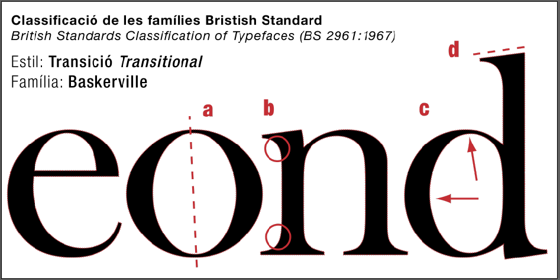

Baskerville của Fry cho thấy các tính năng chính của nó: một trục gần như thẳng đứng của các điểm mỏng nhất (a), độ tương phản đột quỵ cao (c) và các serif gần như ngang là các điểm sắc nét (d). Điều này so sánh với các thiết kế kiểu trước đó như Bembo (bên dưới) với trục chéo (b), độ tương phản đột quỵ (d) và serifs ở góc lớn hơn so với phương ngang (e).
Kiểu dáng của Baskerville được so sánh với người tiền nhiệm của nó là kiểu Cổ Điển (Old style hay là Garalde), được nhận biết bởi sự tương phản cao giữa các nét, tới nỗi một nhà bình luận đã ám chỉ Baskerville đã "làm mù cả một quốc gia" - quan niệm hồi đó cho rằng sự tương phản quá lớn khiến chữ không thể đọc được.